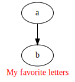
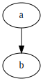
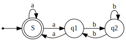
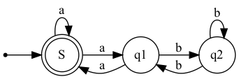
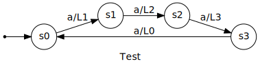

Figuren met Graphviz
Figuren met Graphviz#
%%bash
echo 'digraph { a -> b }' | dot -Tsvg -Gfontcolor=red -Glabel="My favorite letters" > test.svg
from IPython.display import SVG, display
from pathlib import Path
txt = Path('test.svg').read_text()
display(SVG(txt))

hello = 'hello'
world = ' world!'
!echo { hello + world }
hello world!
fig = !echo 'digraph { a -> b }' | dot -Tsvg
display(SVG(fig ))
---------------------------------------------------------------------------
TypeError Traceback (most recent call last)
Input In [4], in <cell line: 2>()
1 fig = get_ipython().getoutput("echo 'digraph { a -> b }' | dot -Tsvg")
----> 2 display(SVG(fig ))
File ~/opt/anaconda3/envs/jbooktest/lib/python3.10/site-packages/IPython/core/display.py:320, in DisplayObject.__init__(self, data, url, filename, metadata)
316 self.filename = filename
317 # because of @data.setter methods in
318 # subclasses ensure url and filename are set
319 # before assigning to self.data
--> 320 self.data = data
322 if metadata is not None:
323 self.metadata = metadata
File ~/opt/anaconda3/envs/jbooktest/lib/python3.10/site-packages/IPython/core/display.py:479, in SVG.data(self, svg)
477 # parse into dom object
478 from xml.dom import minidom
--> 479 x = minidom.parseString(svg)
480 # get svg tag (should be 1)
481 found_svg = x.getElementsByTagName('svg')
File ~/opt/anaconda3/envs/jbooktest/lib/python3.10/xml/dom/minidom.py:1998, in parseString(string, parser)
1996 if parser is None:
1997 from xml.dom import expatbuilder
-> 1998 return expatbuilder.parseString(string)
1999 else:
2000 from xml.dom import pulldom
File ~/opt/anaconda3/envs/jbooktest/lib/python3.10/xml/dom/expatbuilder.py:925, in parseString(string, namespaces)
923 else:
924 builder = ExpatBuilder()
--> 925 return builder.parseString(string)
File ~/opt/anaconda3/envs/jbooktest/lib/python3.10/xml/dom/expatbuilder.py:223, in ExpatBuilder.parseString(self, string)
221 parser = self.getParser()
222 try:
--> 223 parser.Parse(string, True)
224 self._setup_subset(string)
225 except ParseEscape:
TypeError: a bytes-like object is required, not 'SList'
fig
fig1 = '\n'.join(fig)
display(SVG(fig1))

display(fig1)
'<?xml version="1.0" encoding="UTF-8" standalone="no"?>\n<!DOCTYPE svg PUBLIC "-//W3C//DTD SVG 1.1//EN"\n "http://www.w3.org/Graphics/SVG/1.1/DTD/svg11.dtd">\n<!-- Generated by graphviz version 6.0.1 (20220911.1526)\n -->\n<!-- Pages: 1 -->\n<svg width="62pt" height="116pt"\n viewBox="0.00 0.00 62.00 116.00" xmlns="http://www.w3.org/2000/svg" xmlns:xlink="http://www.w3.org/1999/xlink">\n<g id="graph0" class="graph" transform="scale(1 1) rotate(0) translate(4 112)">\n<polygon fill="white" stroke="none" points="-4,4 -4,-112 58,-112 58,4 -4,4"/>\n<!-- a -->\n<g id="node1" class="node">\n<title>a</title>\n<ellipse fill="none" stroke="black" cx="27" cy="-90" rx="27" ry="18"/>\n<text text-anchor="middle" x="27" y="-86.3" font-family="Times,serif" font-size="14.00">a</text>\n</g>\n<!-- b -->\n<g id="node2" class="node">\n<title>b</title>\n<ellipse fill="none" stroke="black" cx="27" cy="-18" rx="27" ry="18"/>\n<text text-anchor="middle" x="27" y="-14.3" font-family="Times,serif" font-size="14.00">b</text>\n</g>\n<!-- a->b -->\n<g id="edge1" class="edge">\n<title>a->b</title>\n<path fill="none" stroke="black" d="M27,-71.7C27,-63.98 27,-54.71 27,-46.11"/>\n<polygon fill="black" stroke="black" points="30.5,-46.1 27,-36.1 23.5,-46.1 30.5,-46.1"/>\n</g>\n</g>\n</svg>'
txt
'<?xml version="1.0" encoding="UTF-8" standalone="no"?>\n<!DOCTYPE svg PUBLIC "-//W3C//DTD SVG 1.1//EN"\n "http://www.w3.org/Graphics/SVG/1.1/DTD/svg11.dtd">\n<!-- Generated by graphviz version 6.0.1 (20220911.1526)\n -->\n<!-- Pages: 1 -->\n<svg width="127pt" height="139pt"\n viewBox="0.00 0.00 127.00 139.00" xmlns="http://www.w3.org/2000/svg" xmlns:xlink="http://www.w3.org/1999/xlink">\n<g id="graph0" class="graph" transform="scale(1 1) rotate(0) translate(4 135)">\n<polygon fill="white" stroke="none" points="-4,4 -4,-135 123,-135 123,4 -4,4"/>\n<text text-anchor="middle" x="59.5" y="-7.8" font-family="Times,serif" font-size="14.00" fill="red">My favorite letters</text>\n<!-- a -->\n<g id="node1" class="node">\n<title>a</title>\n<ellipse fill="none" stroke="black" cx="59.5" cy="-113" rx="27" ry="18"/>\n<text text-anchor="middle" x="59.5" y="-109.3" font-family="Times,serif" font-size="14.00">a</text>\n</g>\n<!-- b -->\n<g id="node2" class="node">\n<title>b</title>\n<ellipse fill="none" stroke="black" cx="59.5" cy="-41" rx="27" ry="18"/>\n<text text-anchor="middle" x="59.5" y="-37.3" font-family="Times,serif" font-size="14.00">b</text>\n</g>\n<!-- a->b -->\n<g id="edge1" class="edge">\n<title>a->b</title>\n<path fill="none" stroke="black" d="M59.5,-94.7C59.5,-86.98 59.5,-77.71 59.5,-69.11"/>\n<polygon fill="black" stroke="black" points="63,-69.1 59.5,-59.1 56,-69.1 63,-69.1"/>\n</g>\n</g>\n</svg>\n'
digraph finite_state_machine {
rankdir=LR;
size="8,5"
node [shape = doublecircle]; S;
node [shape = point ]; qi
node [shape = circle];
qi -> S;
S -> q1 [ label = "a" ];
S -> S [ label = "a" ];
q1 -> S [ label = "a" ];
q1 -> q2 [ label = "b" ];
q2 -> q1 [ label = "b" ];
q2 -> q2 [ label = "b" ];
}
dot -Tpng fsm.gv -o myFiniteStateMachine.png
digraph = '''
digraph finite_state_machine {
rankdir=LR;
size="8,5"
node [shape = doublecircle]; S;
node [shape = point ]; qi
node [shape = circle];
qi -> S;
S -> q1 [ label = "a" ];
S -> S [ label = "a" ];
q1 -> S [ label = "a" ];
q1 -> q2 [ label = "b" ];
q2 -> q1 [ label = "b" ];
q2 -> q2 [ label = "b" ];
}
'''
digraph
'\ndigraph finite_state_machine {\n rankdir=LR;\n size="8,5"\n\n node [shape = doublecircle]; S;\n node [shape = point ]; qi\n\n node [shape = circle];\n qi -> S;\n S -> q1 [ label = "a" ];\n S -> S [ label = "a" ];\n q1 -> S [ label = "a" ];\n q1 -> q2 [ label = "b" ];\n q2 -> q1 [ label = "b" ];\n q2 -> q2 [ label = "b" ];\n}\n'
fig2 = !echo '{digraph}' | dot -Tsvg
display(SVG('\n'.join(fig2)))

!echo '{digraph}' > digraph.dot
!ls
_build glossary.md requirements.txt
_config.yml hello-world.md schakelaar.md
_static input-output-systemen.md stemmen.md
_toc.yml intro.md stopwatch.md
automaten.md kloppend-hart.md teller.md
buttons-events.md laden.md test.svg
digraph.dot logo.png timers.md
digraph.png microbit-cheatsheet.md valdetectie.md
events-signalen.md microbit-kennismaking.md verkeerslichten.md
ext mu-editor.md voordedocent.md
figs python.md
figuren.ipynb references.bib
res = !dot -Tsvg digraph.dot
display(SVG('\n'.join(res)))
!cat digraph.dot
digraph finite_state_machine {
rankdir=LR;
size="8,5"
node [shape = doublecircle]; S;
node [shape = point ]; qi
node [shape = circle];
qi -> S;
S -> q1 [ label = "a" ];
S -> S [ label = "a" ];
q1 -> S [ label = "a" ];
q1 -> q2 [ label = "b" ];
q2 -> q1 [ label = "b" ];
q2 -> q2 [ label = "b" ];
}
from IPython.display import Image
!echo '{digraph}' | dot -Tpng > digraph.png
display(Image(filename='digraph.png'))

PNG-uitvoer kan niet zomaar verwerkt worden in “display”. Hiervoor moet eigenlijk een tussen-bestand gebruikt worden, zoals in dit voorbeeld.
digraph1 = '''
digraph finite_state_machine {
rankdir=LR;
size="8,5"
fontname="Gill Sans"
label="Test"
node [shape = circle fontname="Gill Sans"]; s0;
node [shape = point ]; qi
node [shape = circle; fontname="Gill Sans"];
qi -> s0;
s0 -> s1 [ fontname="Gill Sans" label = "a/L1" ];
s1 -> s2 [ fontname="Gill Sans" label = "a/L2" ];
s2 -> s3 [ fontname="Gill Sans" label = "a/L3" ];
s3 -> s0 [ fontname="Gill Sans" label = "a/L0" ];
}
'''
fig3 = !echo '{digraph1}' | dot -Tsvg
fig3
['<?xml version="1.0" encoding="UTF-8" standalone="no"?>',
'<!DOCTYPE svg PUBLIC "-//W3C//DTD SVG 1.1//EN"',
' "http://www.w3.org/Graphics/SVG/1.1/DTD/svg11.dtd">',
'<!-- Generated by graphviz version 6.0.1 (20220911.1526)',
' -->',
'<!-- Title: finite_state_machine Pages: 1 -->',
'<svg width="379pt" height="100pt"',
' viewBox="0.00 0.00 379.39 99.70" xmlns="http://www.w3.org/2000/svg" xmlns:xlink="http://www.w3.org/1999/xlink">',
'<g id="graph0" class="graph" transform="scale(1 1) rotate(0) translate(4 95.7)">',
'<title>finite_state_machine</title>',
'<polygon fill="white" stroke="none" points="-4,4 -4,-95.7 375.39,-95.7 375.39,4 -4,4"/>',
'<text text-anchor="middle" x="185.69" y="-7.8" font-family="Gill Sans" font-size="14.00">Test</text>',
'<!-- s0 -->',
'<g id="node1" class="node">',
'<title>s0</title>',
'<ellipse fill="none" stroke="black" cx="59.45" cy="-41.85" rx="18.7" ry="18.7"/>',
'<text text-anchor="middle" x="59.45" y="-38.15" font-family="Gill Sans" font-size="14.00">s0</text>',
'</g>',
'<!-- s1 -->',
'<g id="node3" class="node">',
'<title>s1</title>',
'<ellipse fill="none" stroke="black" cx="157.14" cy="-72.85" rx="18.7" ry="18.7"/>',
'<text text-anchor="middle" x="157.14" y="-69.15" font-family="Gill Sans" font-size="14.00">s1</text>',
'</g>',
'<!-- s0->s1 -->',
'<g id="edge2" class="edge">',
'<title>s0->s1</title>',
'<path fill="none" stroke="black" d="M77.56,-47.39C91.89,-52.03 112.61,-58.75 129.18,-64.11"/>',
'<polygon fill="black" stroke="black" points="128.27,-67.5 138.86,-67.25 130.43,-60.84 128.27,-67.5"/>',
'<text text-anchor="middle" x="108.3" y="-65.65" font-family="Gill Sans" font-size="14.00">a/L1</text>',
'</g>',
'<!-- qi -->',
'<g id="node2" class="node">',
'<title>qi</title>',
'<ellipse fill="black" stroke="black" cx="1.8" cy="-41.85" rx="1.8" ry="1.8"/>',
'</g>',
'<!-- qi->s0 -->',
'<g id="edge1" class="edge">',
'<title>qi->s0</title>',
'<path fill="none" stroke="black" d="M3.77,-41.85C7.14,-41.85 18.81,-41.85 30.51,-41.85"/>',
'<polygon fill="black" stroke="black" points="30.6,-45.35 40.6,-41.85 30.6,-38.35 30.6,-45.35"/>',
'</g>',
'<!-- s2 -->',
'<g id="node4" class="node">',
'<title>s2</title>',
'<ellipse fill="none" stroke="black" cx="254.84" cy="-72.85" rx="18.7" ry="18.7"/>',
'<text text-anchor="middle" x="254.84" y="-69.15" font-family="Gill Sans" font-size="14.00">s2</text>',
'</g>',
'<!-- s1->s2 -->',
'<g id="edge3" class="edge">',
'<title>s1->s2</title>',
'<path fill="none" stroke="black" d="M176.14,-72.85C190.05,-72.85 209.54,-72.85 225.53,-72.85"/>',
'<polygon fill="black" stroke="black" points="225.92,-76.35 235.92,-72.85 225.92,-69.35 225.92,-76.35"/>',
'<text text-anchor="middle" x="205.99" y="-76.65" font-family="Gill Sans" font-size="14.00">a/L2</text>',
'</g>',
'<!-- s3 -->',
'<g id="node5" class="node">',
'<title>s3</title>',
'<ellipse fill="none" stroke="black" cx="352.54" cy="-41.85" rx="18.7" ry="18.7"/>',
'<text text-anchor="middle" x="352.54" y="-38.15" font-family="Gill Sans" font-size="14.00">s3</text>',
'</g>',
'<!-- s2->s3 -->',
'<g id="edge4" class="edge">',
'<title>s2->s3</title>',
'<path fill="none" stroke="black" d="M272.95,-67.31C287.29,-62.66 308.01,-55.95 324.57,-50.58"/>',
'<polygon fill="black" stroke="black" points="325.82,-53.86 334.26,-47.45 323.66,-47.2 325.82,-53.86"/>',
'<text text-anchor="middle" x="303.69" y="-65.65" font-family="Gill Sans" font-size="14.00">a/L3</text>',
'</g>',
'<!-- s3->s0 -->',
'<g id="edge5" class="edge">',
'<title>s3->s0</title>',
'<path fill="none" stroke="black" d="M333.34,-41.85C284.13,-41.85 148.19,-41.85 88.81,-41.85"/>',
'<polygon fill="black" stroke="black" points="88.66,-38.35 78.66,-41.85 88.66,-45.35 88.66,-38.35"/>',
'<text text-anchor="middle" x="205.99" y="-45.65" font-family="Gill Sans" font-size="14.00">a/L0</text>',
'</g>',
'</g>',
'</svg>']
display(SVG('\n'.join(fig3)))

Ik vind persoonlijk deze layout minder fraai; maar ik weet niet wat ik daaraan kan aanpassen.
Als (schreefloos) font is “Gill Sans” duidelijk te prefereren (minder massief) boven Arial of Helvetica.